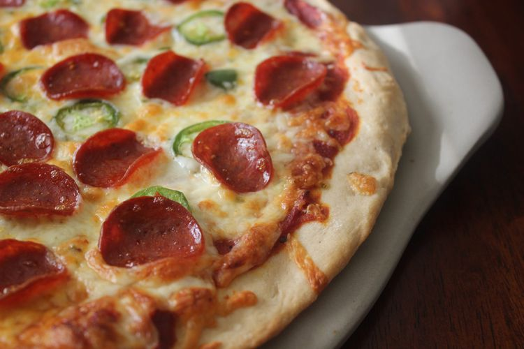

Ingridients for pizza dough:
- Yeast
Active dry yeast is a leavening agent, which means it's the ingredient that causes the pizza dough to rise.
- Sugar
To activate your yeast, you'll need to dissolve it in warm water with a teaspoon of sugar. The sugar gives the yeast something to eat and speeds up the activation process. You'll know your yeast is active when it becomes bubbly and frothy on top.
- Bread Flour
Bread flour is ideal for pizza crust becauseit creates chewier results than all-purpose flour. This is because it contains more protein, which helps produce lots of gluten. Gluten is what gives the crust elasticity.
- Olive Oil
Olive oil serves a couple purposes when it comes to pizza crust: Not only does it add color and flavor, but it creates a barrier between the oil and water. This oily barrier prevents sogginess.
- Salt
A little bit of salt goes a long way. Salt adds flavor, strengthens the gluten (creating a chewier crust), and slows down fermentation (resulting in a better rise).
How to Roll Out Pizza Dough
Stretching pizza dough is the most hands-on part of the pizza crust-making process. It takes a little practice, but it's as easy as pie (pun intended). To shape the dough:
Let the Dough Come to Room Temperature
After you're finished mixing the ingredients, allow your dough to rest on the counter for about 5 minutes. This will allow the gluten to relax, making the dough much easier to stretch and shape.
Prepare Your Surface With Oil
You might feel inclined to prep your workspace with a big handful of flour to prevent sticking. This is a helpful step with many kinds of dough. However, in this case, too much flour can make your pizza crust tough. Instead, rub your surface (and your hands) with a few tablespoons of olive oil and maybe a little bit of flour. This will prevent sticking, encourage a crispy texture, and ensure a gorgeous golden color.
Shape the Dough
You have a few options when it comes to shaping the dough. Stretch it in the air, use a rolling pin, or pat it with your hands. No matter which method you choose, make sure not to overwork the dough. Working it too much will create a tough texture. When you're done, you should have an even circle that's about 10 to 12 inches wide and about ⅓-inch thick. If you get too thin, the crust may not be able to support the sauce and toppings.
